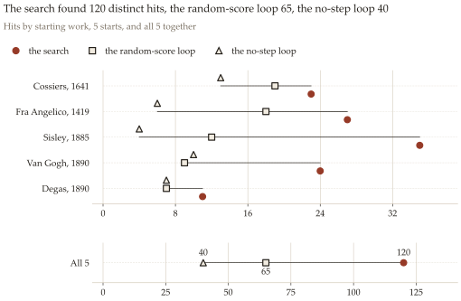
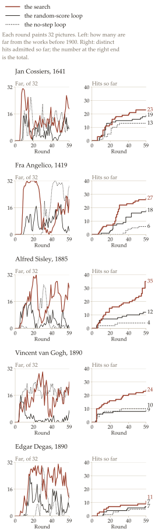
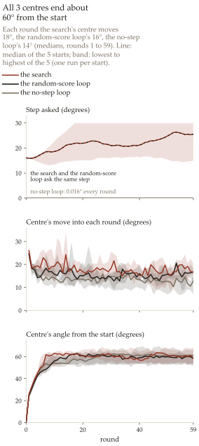
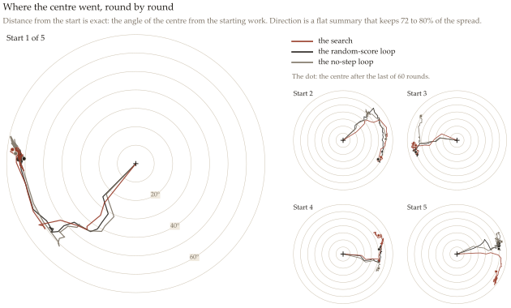
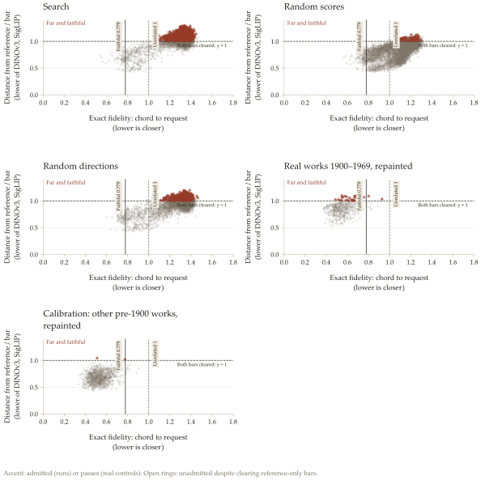
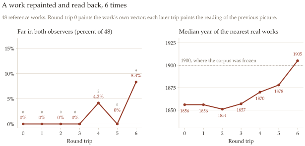

Q12 What does the search add over its controls?
DuROOM search does 3 things each round: it is told a score, it restarts from where the decoder’s own pictures read back, and it takes a step (Q10). Which of them finds the pictures of Q11? Two controls take parts away. The random-score loop is the same loop told random scores, at the same step sizes. The no-step loop takes no step and is told random scores. Each paints 1,920 pictures a run, 9,600 over 5 starts, with the same decoder.
The score
Told the real score, the loop has about twice as many hits as with random scores, and more at every start. A hit is an admitted picture (far, faithful as the loop reads it, and apart from those already kept, Q10) that later works also cover. A picture is covered when it is not far from today’s reference (2,048 repainted works of every date) and most of its 15 nearest there are dated 1900 or later. Of the far and faithful pictures, 96 to 98% are covered.1 DuROOM search also has 3 times as many hits as the no-step loop (Figure 1, Figure 2).2 Most of its hits, 81%, sit where art went only after 1900; 13% are off the manifold, 5% have a work dated before 1900 within the manifold line and under 1% only undated works.
For every picture painted, admitted or not, we count the kinds of Q11 (far and faithful, where art went only after 1900, off the manifold; Table 1). Beside the 2 controls we set a single walk, which paints one picture at a time and moves to it only when it scores higher, at the same budget:
| Of 9,600 pictures | DuROOM search | Random-score loop | No-step loop | Single walk |
|---|---|---|---|---|
| Far and faithful | 46% 4,380 | 16% 1,534 | 28% 2,708 | 25% 2,446 |
| On the manifold, a work dated 1900 or later within the manifold line and none dated before | 40% 3,850 | 13% 1,247 | 18% 1,714 | 22% 2,065 |
| The same, with a large leftover share | 14% 1,314 | 0.7% 69 | 0.1% 13 | 4.3% 412 |
| Off the manifold | 3.4% 331 | 1.9% 187 | 1.1% 107 | 2.9% 277 |
On pictures where art went only after 1900 (the second and third rows), the search has more than both controls at every start.3 On far and faithful pictures it has more than the random-score loop at every start, and more than the no-step loop at 4 of the 5. Its pictures from different starts arrive at the same later works more often than the controls do. At equal size, 113 pictures from each start for each loop, 62% of its pictures where art went only after 1900 sit at works reached from 3 or more starts, against 37% for the random-score loop and 0% for the no-step loop (Q11). Off the manifold it has more in sum, though not at every start.4567 Figure 3 shows one far and faithful picture from each control and from the single walk.
Does the search’s lead rest on the one bar? We scored every picture again under a bar per region (Q7). The search still paints more far and faithful pictures in sum than either control, in every draw of the regions (Table 2). By our rule for being ahead (more at every start and a quarter more in sum), it is ahead of the random-score loop in 7 of the 10 draws and of the no-step loop in 4.
| Far and faithful, of 9,600 | DuROOM search | Random-score loop | No-step loop |
|---|---|---|---|
| One bar | 46% 4,380 | 16% 1,534 | 28% 2,708 |
| A bar per region, 4 regions | 12 to 34% 1,153 to 3,303 | 2.9 to 4.9% 277 to 472 | 5.4 to 14% 516 to 1,301 |
| A bar per region, 8 regions | 4.5 to 5.4% 432 to 518 | 1 to 2.2% 97 to 213 | 1.6 to 4.5% 156 to 429 |


![Three rows, one per procedure, each named at the left: the random-score loop, the no-step loop, the single walk. Each row has the starting work from before 1900, the picture the procedure painted, and the real work dated 1900 or later that places it, each credited. Beside the pictures (under them on a phone) is a fact line: the round; in each observer, the nearest real work and its distance against the manifold line; no work dated before 1900 within the line in either observer. The random-score loop: from Alfred Sisley, Two Women Walking along the riverbank, 1885, round 34, with Gene Davis, Jack-in-the-Box, 1969, the nearest real work in DINOv3, 0.419 against 0.763. The no-step loop: from Vincent van Gogh, Blossoming Branches, 1890, round 21, with Jan Groth, Tegning, 1973, the nearest in SigLIP, 0.810 against 0.830. The single walk: from Vincent van Gogh, Blossoming Branches, 1890, round 58, with Ellsworth Kelly, Study for Rebound, 1955, the nearest in SigLIP, 0.770 against 0.830. The no-step loop's and the single walk's rows end with our reading by eye. Each names work 1, the work shown, which is labelled (work 1).](figures/controls_main_v2.svg)
The restart
Why restart the centre from its own pictures at all? Left free, the search leaves the region where the vectors of real images lie, and none of its pictures is far and faithful (below). So DuROOM search restarts each round from where its 4 best feasible pictures read back.8 Restarted from 1 picture it has 2.4 times as many hits and 3 times as many far and faithful pictures off the manifold (Q10).
Of the searches we ran, those that restart paint faithful pictures, and the free search, which does not, paints almost none.9 At least 97% of the pictures each loop paints are faithful. Each round the restart moves the centre farther than CMA-ES’s own update would.10 The 3 centres end at about the same angle from the start (Figure 4, Figure 5). Of the pictures the free search paints, with no restart, 1.4% are faithful, and none of those is far.
The no-step loop only repaints its centre and restarts, and is told random scores; 28% of the pictures it paints are far and faithful. So a loop that only restarts, with no step and no real score, already paints more than half as many far and faithful pictures as DuROOM search.


The step
Keep the score and take away the step, and neither the no-step loop told the real score nor DuROOM search is ahead. The no-step loop told the real score admits 2.5 times as many pictures as when it is told random scores, and about four fifths as many as DuROOM search. It has more than DuROOM search at 2 starts and fewer at 3. We also notice that a picture barely shows which request it came from: among the 32 requests of its round, its CLIP reading is nearest to its own request for 6% of the pictures, where chance gives 3%.11 We read the search as a ratchet on the decoder’s noise: of 32 paintings it takes the 4 farthest feasible ones and starts again from where they read back.12
Left free
Left free, the search goes far, and none of its far pictures is faithful. The free search is DuROOM search with fidelity only recorded, no restart and a first step of about 30 degrees in place of 16 (Q10). Its requests move away from the start a few degrees a round until they are nearly at right angles to it (appendix). It admits 31 to 43% of what it paints, and none of those pictures is faithful to its request (Figure 6).13 The score still steers: told random scores, the same loop admits about 1.4% of its pictures (by angle in the appendix).14 Of the dated real works nearest to its admitted pictures, 94 to 97% are from after 1900, by run.15

The decoder alone
With no search at all, the decoder drifts toward later art and now and then lands far. Repainted and read back in CLIP 6 times, 8% of the 48 works from before 1900 are far at the sixth trip, and the median date of their nearest real works moves past 1900 (Figure 7).16 With no search, 0.5% of the pictures painted from the 6 kinds of request in Q9 are far and faithful. With no decoder at all, following the score in CLIP from an earlier work does not lead toward later works.17 So part of every result on this page is the decoder’s (Discussion).18

The observers and AIMv2
On the free search’s pictures, the 2 observers mostly agree.
Against the reference alone each puts about 80% of the free search’s pictures over its own bar, and 70% are over both.
They agree less on its runs told random scores. Under random scores one observer puts up to 30% of the pictures over its own bar in run 2 and about 10% or less in the other runs, and both together about 14% at most.
The held-out encoder, AIMv2, scored against the same reference with the same rule, calls 12.7% of the repainted 1900 to 1969 works far against 0.6% of the 1,000 held-out works before 1900, and agrees with the 2 observers on 82% of their far calls. On the free search’s pictures it agrees with 56 to 76% of their far calls by run and calls 16 to 33% of their near calls far. The corpus has no AIMv2 embedding, so the nearest works above are read in DINOv3.
Next, the Discussion.
Footnotes
Without the covered condition the search would not have more hits at every start, as at one start the search and the random-score loop both admit 11. All 160 raw noise and plain images, read as they are with no decoder, are covered too.↩︎
All 15 runs ran on the same type of graphics card. Outside them, DuROOM search given the same command on another type admitted 66 pictures where it had admitted 30. The 2 runs differ from their second round on.↩︎
Many of these pictures sit close to one another. Count only the pictures that lie apart: within each start, in the order painted, a picture counts only if it lies more than 0.575 in DINOv3 from every picture counted before it. Of the third row’s kind, the search then has 187, the single walk 217, the random-score loop 36 and the no-step loop 10. Of the far and faithful pictures off the manifold, they have 174, 205, 89 and 49. So the single walk paints fewer such pictures than the search, and more that lie apart (appendix).↩︎
Of the 1,920 a run, DuROOM search has 679, 864, 896, 840 and 1,101 far and faithful pictures by start (Cossiers, Fra Angelico, Sisley, van Gogh, Degas). The random-score loop has 312, 380, 304, 149 and 389. The no-step loop has 545, 666, 214, 1,010 and 273.↩︎
Of each loop’s far and faithful pictures, 88%, 81% and 63% have a work dated 1900 or later within the manifold line and none dated before 1900, so this count is mostly the far and faithful count carried through. With undated works dated by their artist, and the pictures with a still-undated work within the manifold line set aside, neither the search nor a control is ahead. The counts by start are in the appendix.↩︎
One start carries 227 of the search’s 331 far and faithful pictures off the manifold. The search has 1 and 0 at 2 starts.↩︎
The single walk is a greedy search of its own, with one walk per start, so it does not tell what painting 32 at once adds. It was read only at 32 directions, with undated works left undated. With both observers required for a work to count as within the manifold line, the 1,314 against 412 become 1,185 against 143, and neither is ahead, as at one start the walk has 2 more.↩︎
We ran the search with the restart from 1, from 16 and from every feasible picture of the 32 in place of 4, one run per number and start. The counts are in the appendix.↩︎
No run tests the restart alone. The free search also has no faithful check, takes a larger step and starts elsewhere. Past about 30 degrees a picture drifts from its request (Q8).↩︎
The restart moves the centre each round by a median of about 18 degrees in the search, 15 in the random-score loop and 13.5 in the no-step loop. CMA-ES’s own update would have moved it about 7, 7 and almost 0.↩︎
The 6% comes from 2 other runs, from 1 start, and we have not measured it on the 15 runs counted here. The runs with no step and the real score, and with the restart from other numbers of pictures, have one run per start. With more pictures the centre also moves less each round, so these runs do not show whether the choice or the shorter move costs the pictures.↩︎
The runs do not show the ratchet, as the real score does 3 things at once: it picks the 4 pictures that restart the centre, it drives CMA-ES’s update of the spread, and it gives a picture that is not feasible a middle rank. Equal step size is not equal requests, as each loop’s spread and centre are its own from the second round on. No loop varies the observers: in all 3, DINOv3 and SigLIP decide what is admitted.↩︎
Of 512 real works from 1900 to 1969, repainted through the same pipeline, 26 are far and faithful (5.1%, appendix). So pictures that are far and faithful exist within the decoder’s reach. The free search did not find them. Repainted twice more with fresh noise, 10 of the 512 are far and faithful on all 3 paintings (2.0%).↩︎
Random directions, with angles drawn from the search’s own pictures and no selection, admitted 12 to 14% of the 1,920 pictures of a run (268, 222 and 227). They are the fairer control if the runs told random scores keep their requests nearer the image region. With 3 runs each, 3 of 3 would come out this way by chance 1 time in 8.↩︎
The nearest real work to an admitted picture has a median year of 1978, 1972 and 1969 by run. It is read in DINOv3, an observer that is part of the admission rule, so it is no independent check. Matches without a date, about 20%, are left out.↩︎
The median year is that of the 10 nearest real works. The chain’s own source picture and its artist’s other works are in the reference and not excluded, which can only lower a far count. The median year at each step is in the appendix.↩︎
CMA-ES and 5 gradient methods each walked from an earlier work’s vector until its score was over a CLIP bar of the same kind. Share of later works among the 10 nearest real works at that point (held-out earlier and later works in equal numbers): 20 to 27% for every method, against 25% for a real earlier work and 73% for a real later one. No method beats an evenly random step by 5 points.↩︎
The decoder is fine-tuned from Stable Diffusion v1, whose model card names LAION-2B and states no limit on the dates of its images. No date limit is stated for the images CLIP and the 2 observers were trained on either. A decoder trained only on works before 1900 is specified and not built.↩︎